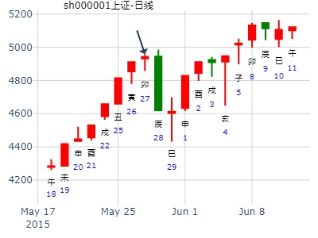

主帖标题: 今天把技术派跌晕了，本周大盘是否如期上攻3000点？
占问事宜：明日大盘走势如何
公历：2011年2月22日21时23分，星期二。
干支：辛卯年 庚寅月 戊申日 癸亥时 [空亡:寅、卯]
主变卦 水地比(坤宫-归魂) 之 水山蹇(兑宫)
朱雀 ▅▅ ▅▅ 妻财戊子水 应 ▅▅ ▅▅ 妻财戊子水
青龙 ▅▅▅▅▅ 兄弟戊戌土 ▅▅▅▅▅ 兄弟戊戌土
玄武 ▅▅ ▅▅ 子孙戊申金 ▅▅ ▅▅ 子孙戊申金 世
白虎 ▅▅ ▅▅×官鬼乙卯木 世 ▅▅▅▅▅ 子孙丙申金
螣蛇 ▅▅ ▅▅ 父母乙巳火 ▅▅ ▅▅ 父母丙午火
勾陈 ▅▅ ▅▅ 兄弟乙未土 ▅▅ ▅▅ 兄弟丙辰土 应
一般申日涨，此处跌，原来是寅卯旬空原因。
捍卫老祖宗感通卦的尊严：测2020.3.2甲辰日上证走势？N03
公历起卦时间：2020年2月28日16时13分 (电脑自动)
干支：庚子年 戊寅月 辛丑日 丙申时 （日空：辰巳）
坤宫：水地比 (归魂) 兑宫：水山蹇
六神 伏神 本 卦 变 卦
螣蛇 妻财戊子水 ▅▅ ▅▅ 应 妻财戊子水 ▅▅ ▅▅
勾陈 兄弟戊戌土 ▅▅▅▅▅ 兄弟戊戌土 ▅▅▅▅▅
朱雀 子孙戊申金 ▅▅ ▅▅ 子孙戊申金 ▅▅ ▅▅ 世
青龙 官鬼乙卯木 ▅▅ ▅▅ 世 ╳→ 子孙丙申金 ▅▅▅▅▅
玄武 父母乙巳火 ▅▅ ▅▅ 父母丙午火 ▅▅ ▅▅
白虎 兄弟乙未土 ▅▅ ▅▅ 兄弟丙辰土 ▅▅ ▅▅ 应
主帖标题: 股市诸葛神数测试
002031 卦语：菱荷香里受恩深 桂魄园时印绶新 从此威名山岳重 光辉直上位丝纶------002031什么时候出货最佳？
公历时间：2007年3月26日15时34分 星期一
干支：丁亥年 癸卯月 己未日 壬申时 (旬空：子丑)
时间: 2007-03-26
干支: 丁亥年癸卯月己未日 (旬空: 子丑 )
水地比(归魂) 水山蹇
六神 伏神 本 卦 变 卦
勾陈 ▅▅ ▅▅ 妻财子水 应 ▅▅ ▅▅ 妻财子水
朱雀 ▅▅▅▅▅ 兄弟戌土 ▅▅▅▅▅ 兄弟戌土
青龙 ▅▅ ▅▅ 子孙申金 ▅▅ ▅▅ 子孙申金 世
玄武 ▅▅ ▅▅ 官鬼卯木 世Ｘ→ ▅▅▅▅▅ 子孙申金
白虎 ▅▅ ▅▅ 父母巳火 ▅▅ ▅▅ 父母午火
腾蛇 ▅▅ ▅▅ 兄弟未土 ▅▅ ▅▅ 兄弟辰土 应
4月第4周：比之蹇，官化子卯化申。申日V形反弹。
2017年4月21日17时17分 乐易
干 支：丁酉年 甲辰月 戊寅日 辛酉时
旬 空：辰巳 寅卯 (申酉) 子丑
坤宫：水地比（归魂） 兑宫：水山蹇
六神 【本 卦】 【变 卦】
朱雀 ▄▄ ▄▄ 妻财戊子水 应 ▄▄ ▄▄ 妻财戊子水
青龙 ▄▄▄▄▄ 兄弟戊戌土 ▄▄▄▄▄ 兄弟戊戌土
玄武 ▄▄ ▄▄ 子孙戊申金 ▄▄ ▄▄ 子孙戊申金 世
白虎 ▄▄ ▄▄ 官鬼乙卯木 世X-> ▄▄▄▄▄ 子孙丙申金
螣蛇 ▄▄ ▄▄ 父母乙巳火 ▄▄ ▄▄ 父母丙午火
勾陈 ▄▄ ▄▄ 兄弟乙未土 ▄▄ ▄▄ 兄弟丙辰土 应
六三：比之匪人。
象曰：比之匪人，不亦伤乎
乐易 起卦方式：手工指定 易经股市论坛 www.yijingstock.com 在线排盘系统
公历时间：2015年5月27日15时35分
干 支：乙未年 辛巳月 癸卯日 庚申时
旬 空：辰巳 申酉 (辰巳) 子丑
坤宫：水地比（归魂） 兑宫：水山蹇
六神 【本 卦】 【变 卦】
白虎 ▄▄ ▄▄ 妻财戊子水 应 ▄▄ ▄▄ 妻财戊子水
螣蛇 ▄▄▄▄▄ 兄弟戊戌土 ▄▄▄▄▄ 兄弟戊戌土
勾陈 ▄▄ ▄▄ 子孙戊申金 ▄▄ ▄▄ 子孙戊申金 世
朱雀 ▄▄ ▄▄ 官鬼乙卯木 世X-> ▄▄▄▄▄ 子孙丙申金
青龙 ▄▄ ▄▄ 父母乙巳火 ▄▄ ▄▄ 父母丙午火
玄武 ▄▄ ▄▄ 兄弟乙未土 ▄▄ ▄▄ 兄弟丙辰土 应
六三：比之匪人。
象曰：比之匪人，不亦伤乎

占事：上证5.13收盘走势
公历起卦时间：2021年5月13日6时44分 (电脑自动)
干支：辛丑年 癸巳月 辛酉日 辛卯时 （日空：子丑）
坤宫：水地比 (归魂) 兑宫：水山蹇
六神 伏神 本 卦 变 卦
螣蛇 妻财戊子水 ▅▅ ▅▅ 应 妻财戊子水 ▅▅ ▅▅
勾陈 兄弟戊戌土 ▅▅▅▅▅ 兄弟戊戌土 ▅▅▅▅▅
朱雀 子孙戊申金 ▅▅ ▅▅ 子孙戊申金 ▅▅ ▅▅ 世
青龙 官鬼乙卯木 ▅▅ ▅▅ 世 ╳→ 子孙丙申金 ▅▅▅▅▅
玄武 父母乙巳火 ▅▅ ▅▅ 父母丙午火 ▅▅ ▅▅
白虎 兄弟乙未土 ▅▅ ▅▅ 兄弟丙辰土 ▅▅ ▅▅ 应
《周易》——水地比 坎上下坤比：吉。 原筮元永贞，无咎。 不宁方来，后夫凶。彖曰：比，吉也，比，辅也，下顺从也。 原筮元永贞，无咎，以刚中也。不宁方来，上下应也。 后夫凶，其道穷也。象曰：地上有水，比；先王以建万国，亲诸侯。上六：比之无首，凶。象曰：比之无首，无所终也。
九五：显比，王用三驱，失前禽。 邑人不诫，吉。象曰：显比之吉，位正中也。舍逆取顺，失前禽也。 邑人不诫，上使中也。
六四：外比之，贞吉。象曰：外比於贤，以从上也。
六三：比之匪人。象曰：比之匪人，不亦伤乎！
六二：比之自内，贞吉。象曰：比之自内，不自失也。
初六：有孚比之，无咎。 有孚盈缶，终来有他，吉。象曰：比之初六，有他吉也。
主帖标题: 6月29日 沪市大盘涨跌？
干支：乙未年 壬午月 丙子日 癸巳时 （日空：申酉）
神煞：驿马－寅 桃花－酉 日禄－巳 贵人－酉，亥
坤宫：水地比 (归魂) 兑宫：水山蹇
青龙 妻财戊子水 ▅▅ ▅▅ 应 妻财戊子水 ▅▅ ▅▅
玄武 兄弟戊戌土 ▅▅▅▅▅ 兄弟戊戌土 ▅▅▅▅▅
白虎 子孙戊申金 ▅▅ ▅▅ 子孙戊申金 ▅▅ ▅▅ 世
腾蛇 官鬼乙卯木 ▅▅ ▅▅ 世 ╳→ 子孙丙申金 ▅▅▅▅▅
勾陈 父母乙巳火 ▅▅ ▅▅ 父母丙午火 ▅▅ ▅▅
朱雀 兄弟乙未土 ▅▅ ▅▅ 兄弟丙辰土 ▅▅ ▅▅ 应
六三：比之匪人。象曰：比之匪人，不亦伤乎！---老百姓遇到强盗，能不伤吗
~收盘实跌139.84点，预测基本正确。算来从前周五到今天，已是六连中了。但今天意义重大，不仅是预测大盘涨跌正确，而且抄底600737成功（20元）。更由于本卦在25日起得，而27日央行宣布28日降息降准。。。29日是不是大涨？这两天俺千方百计在卦中寻找上涨基因，结果很失望--找不到，所以维持原判（断），看看29日这一天，到底谁更厉害一点。。。自己加精，鼓励一下
水地比之蹇，测股指期货IF1007下周(7.5--7.9)涨跌如何？ 官化子。卯化申。大涨。
占事: 股指期货IF1007下周(7.5--7.9)涨跌如何？
起卦方式：手动摇卦
公历时间：2010年7月3日15时54分
干支：庚寅年 壬午月 甲寅日 壬申时 旬空：子丑
坤宫：水地比（归魂） 兑宫：水山蹇
玄武 ▄▄ ▄▄ 妻财戊子水 应 ▄▄ ▄▄ 妻财戊子水
白虎 ▄▄▄▄▄ 兄弟戊戌土 ▄▄▄▄▄ 兄弟戊戌土
螣蛇 ▄▄ ▄▄ 子孙戊申金 ▄▄ ▄▄ 子孙戊申金 世
勾陈 ▄▄ ▄▄ 官鬼乙卯木 世X-> ▄▄▄▄▄ 子孙丙申金
朱雀 ▄▄ ▄▄ 父母乙巳火 ▄▄ ▄▄ 父母丙午火
青龙 ▄▄ ▄▄ 兄弟乙未土 ▄▄ ▄▄ 兄弟丙辰土 应
官化子，大涨。
2022-08-03
冠农股份8月。比之蹇。贺远致
时间: 2022-08-03
干支: 壬寅年丁未月戊子日 (旬空: 午未 )
水地比(归魂) 水山蹇
六神 伏神 本 卦 变 卦
朱雀 ▅▅ ▅▅ 妻财子水 应 ▅▅ ▅▅ 妻财子水
青龙 ▅▅▅▅▅ 兄弟戌土 ▅▅▅▅▅ 兄弟戌土
玄武 ▅▅ ▅▅ 子孙申金 ▅▅ ▅▅ 子孙申金 世
白虎 ▅▅ ▅▅ 官鬼卯木 世Ｘ→ ▅▅▅▅▅ 子孙申金
腾蛇 ▅▅ ▅▅ 父母巳火 ▅▅ ▅▅ 父母午火
勾陈 ▅▅ ▅▅ 兄弟未土 ▅▅ ▅▅ 兄弟辰土 应
主帖标题: 8.11大盘？
2022年8月11日3时22分
干支：壬寅年 戊申月 丙申日 庚寅时 （日空：辰巳）
神煞：驿马－寅 桃花－酉 日禄－巳 贵人－酉，亥
坤宫：水地比 (归魂) 兑宫：水山蹇
六神 伏神 本 卦 变 卦
青龙 妻财子水 ▅▅ ▅▅ 应 妻财子水 ▅▅ ▅▅
玄武 兄弟戌土 ▅▅▅▅▅ 兄弟戌土 ▅▅▅▅▅
白虎 子孙申金 ▅▅ ▅▅ 子孙申金 ▅▅ ▅▅ 世
螣蛇 官鬼卯木 ▅▅ ▅▅ 世 ╳→ 子孙申金 ▅▅▅▅▅
勾陈 父母巳火 ▅▅ ▅▅ 父母午火 ▅▅ ▅▅
朱雀 兄弟未土 ▅▅ ▅▅ 兄弟辰土 ▅▅ ▅▅ 应
主帖标题: 9月4日对自己的股票操作指南。
主题：今天买入华纺股份[600448]，能否得财？
丁亥 戊申 辛丑 庚寅 (辰巳空) 丁亥年七月廿三(2007/09/04 03:54:27)
今日买入明日得财。
干支: 丁亥年戊申月辛丑日庚寅时 (旬空: 辰巳 )
水地比(归魂) 水山蹇
六神 伏神 本 卦 变 卦
腾蛇 ▅▅ ▅▅ 妻财子水 应 ▅▅ ▅▅ 妻财子水
勾陈 ▅▅▅▅▅ 兄弟戌土 ▅▅▅▅▅ 兄弟戌土
朱雀 ▅▅ ▅▅ 子孙申金 ▅▅ ▅▅ 子孙申金 世
青龙 ▅▅ ▅▅ 官鬼卯木 世Ｘ→ ▅▅▅▅▅ 子孙申金
玄武 ▅▅ ▅▅ 父母巳火 ▅▅ ▅▅ 父母午火
白虎 ▅▅ ▅▅ 兄弟未土 ▅▅ ▅▅ 兄弟辰土 应
大黑山受众多股友所盼,夜读无字之书，日用无米之炊；沐浴更衣、斋戒三日,神清而卜,乃口中念念有词、疾疾如律令也；但盼天地鬼神相帮、文王伏羲相助，起梅花课测沪市大盘(9月3日)之行情涨跌，得：
起卦方式：报数起卦 (14,16) 动爻加时辰
公历时间：2009年9月2日15时6分
干支：己丑年 壬申月 庚戌日 甲申时
旬空：午未 戌亥 寅卯 午未
坤宫：水地比（归魂） 兑宫：水山蹇
六神 【本 卦】 【变 卦】
螣蛇 ▄▄ ▄▄ 妻财戊子水 应 ▄▄ ▄▄ 妻财戊子水
勾陈 ▄▄▄▄▄ 兄弟戊戌土 ▄▄▄▄▄ 兄弟戊戌土
朱雀 ▄▄ ▄▄ 子孙戊申金 ▄▄ ▄▄ 子孙戊申金 世
青龙 ▄▄ ▄▄ 官鬼乙卯木 世X-> ▄▄▄▄▄ 子孙丙申金
玄武 ▄▄ ▄▄ 父母乙巳火 ▄▄ ▄▄ 父母丙午火
白虎 ▄▄ ▄▄ 兄弟乙未土 ▄▄ ▄▄ 兄弟丙辰土 应
马后炮：
１。官动化子，鬼来送财笑呵呵。
２。空官日合。
官鬼卯木旬空，如同兄弟持世旬空一样，是好事。
子得月助。
本卦须与招商银行的比之蹇同时对比！招行的横盘不动。
水地比之水山蹇，官鬼持世回头克。测招商银行二周内行情如何？官化子。
此处重点是日辰冲飞了子孙。无力制鬼。
公历起卦时间：2013年11月20日18时6分 (手工指定)
干支：癸巳年 癸亥月 庚寅日 乙酉时 （日空：午未）
坤宫：水地比 (归魂) 兑宫：水山蹇
六神 伏神 本 卦 变 卦
腾蛇 妻财戊子水 ▅▅ ▅▅ 应 妻财戊子水 ▅▅ ▅▅
勾陈 兄弟戊戌土 ▅▅▅▅▅ 兄弟戊戌土 ▅▅▅▅▅
朱雀 子孙戊申金 ▅▅ ▅▅ 子孙戊申金 ▅▅ ▅▅ 世
青龙 官鬼乙卯木 ▅▅ ▅▅ 世 ╳→ 子孙丙申金 ▅▅▅▅▅
玄武 父母乙巳火 ▅▅ ▅▅ 父母丙午火 ▅▅ ▅▅
白虎 兄弟乙未土 ▅▅ ▅▅ 兄弟丙辰土 ▅▅ ▅▅ 应
试测12.15上证收盘个位数？
出生：2021 年 性别：男 占事：没填
公历起卦时间：2021年12月15日12时20分 (电脑自动)
干支：辛丑年 庚子月 丁酉日 丙午时 （日空：辰巳）
神煞：驿马－亥 桃花－午 日禄－午 贵人－酉，亥
坤宫：水地比 (归魂) 兑宫：水山蹇
六神 伏神 本 卦 变 卦
青龙 妻财戊子水 ▅▅ ▅▅ 应 妻财戊子水 ▅▅ ▅▅
玄武 兄弟戊戌土 ▅▅▅▅▅ 兄弟戊戌土 ▅▅▅▅▅
白虎 子孙戊申金 ▅▅ ▅▅ 子孙戊申金 ▅▅ ▅▅ 世
螣蛇 官鬼乙卯木 ▅▅ ▅▅ 世 ╳→ 子孙丙申金 ▅▅▅▅▅
勾陈 父母乙巳火 ▅▅ ▅▅ 父母丙午火 ▅▅ ▅▅
朱雀 兄弟乙未土 ▅▅ ▅▅ 兄弟丙辰土 ▅▅ ▅▅ 应